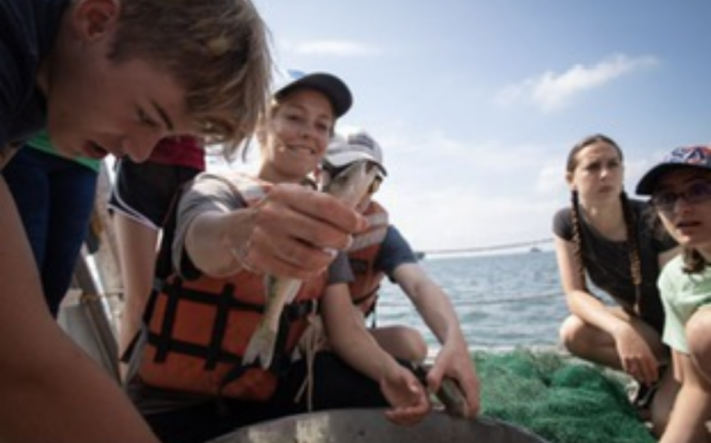

Past Work
Explore my past work experience
Washington Department of Fish and Wildlife
 Operated state boats in crews of 2-3 along five target sections on the Columbia River, surveying for post-spawned Chinook Salmon carcasses. Data was recorded on the carcasses by taking length measurements, determining sex, scanning for coded wire tags, removing otoliths, collecting scales, and rating spawn success of females. Led a three-person crew in Chinook and Coho Redds surveys. Assisted at Priest Rapids Hatchery, sampling and removing coded wire tags from Chinook Salmon snouts.
Operated state boats in crews of 2-3 along five target sections on the Columbia River, surveying for post-spawned Chinook Salmon carcasses. Data was recorded on the carcasses by taking length measurements, determining sex, scanning for coded wire tags, removing otoliths, collecting scales, and rating spawn success of females. Led a three-person crew in Chinook and Coho Redds surveys. Assisted at Priest Rapids Hatchery, sampling and removing coded wire tags from Chinook Salmon snouts.
Stone Laboratory
Biological Field Station Assistant for two seasons at Stone Laboratory, located on Lake Erie's Gibraltar Island. Educated grades 5-12 and adult groups in the natural sciences, teaching hands-on Limnology, Plankton, Macroinvertebrates, Ichthyology, Entomology, Ornithology, Herpetology, Geology, Invasive Species, and Climate classes. Assisted with Lake Erie water snake surveying and water quality research. Use of limnological equipment: Secchi Disk, Plankton Nets, Seines, DO Meter, Eckman Dredge, and Van Dorn. Recorded fish population data through bottom trawls for the Ohio Department of Natural Resources. Daily care of live reptile and amphibian colony. Led tours on the history of Stone Laboratory, the historic fish hatchery, and South Bass Island Lighthouse. Educated visitors on the freshwater fishes of Lake Erie and limnology at the Aquatic Visitors Center.
Cleveland Metroparks, West Creek Reservation
Seasonal Naturalist at the Cleveland Metroparks, Watershed Stewardship Center. Developed and delivered educational programs focused on aquatic science. Taught grades 7-12 coming through the field trip program in classes focused on healthy watersheds, importance of functioning forests, and stormwater management. Engaged with the public through outreach events, representing the Cleveland Metroparks.
Lake Erie Nature & Science Center
Seasonal education and wildlife intern for the Lake Erie Nature and Science Center. As an education intern, I led public animal shows with our resident wildlife and developed nature-based educational programs for the public. As a wildlife intern, I prepped diets, assisted in the animal rehabilitation center, and learned proper handling techniques for a number of animals including birds of prey.